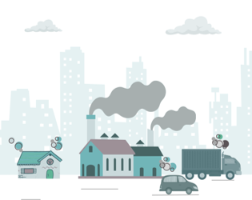
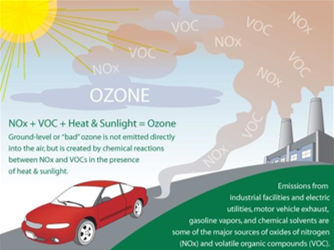
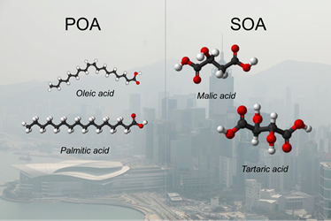

01
Atmospheric Chemistry · Emerging Air Pollution
Understanding the paradigm shift in air pollution driven by climate warming and climate actions.
EASE — Emerging Air pollution and Sustainable Environment — is the atmospheric chemistry research group led by LYU Xiaopu (Xiaopu LYU, Lyu Xiaopu) at Hong Kong Baptist University (HKBU), investigating how a warming climate and the retreat from fossil fuels are transforming air pollution, from volatile organic compounds to tropospheric ozone and organic aerosol.
What we study



About
EASE, short for Emerging Air pollution and Sustainable Environment, delves into the intricate relationships between air pollution, climate change, and environmental sustainability. Air pollution profoundly impacts the sustainability of our environment and is intricately linked to climate change. Global warming exacerbates air pollution by intensifying emissions, accelerating chemical reaction rates, and altering atmospheric circulations. For instance, biogenic terpenoids contribute to approximately 60% of ozone (O3) and secondary organic aerosol (SOA) formation during the summer in Los Angeles, with their contributions increasing significantly with rising temperatures (Pfannerstill et al., Science, 2024).
Conversely, climate actions are causing a significant shift in air pollution patterns. Since the industrial revolution, fossil fuel combustion has been a major source of air pollution. However, as the world moves away from fossil fuels to mitigate both air pollution and climate warming, previously underappreciated sources of air pollution, such as volatile chemical products (McDonald et al., Science, 2018), are becoming more prominent.
We define sources that are climate-sensitive, underappreciated, or previously masked by fossil fuel emissions as Emerging Air Pollution.
EAP sources are not necessarily new, but they are gaining significance as the planet warms and the ‘tide’ of fossil fuel burning recedes. Unfortunately, our understanding of these changes and their impacts on air quality remains limited, underscoring the importance of our research mission.